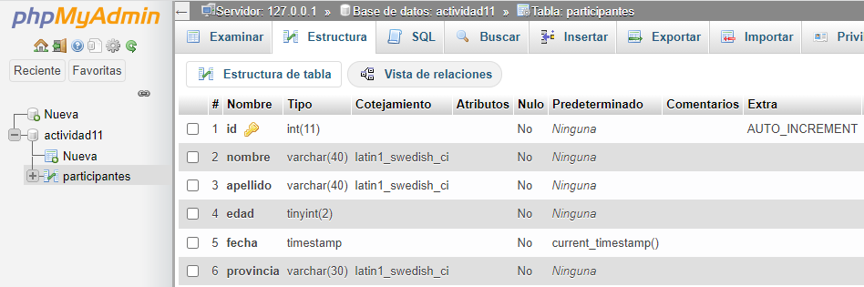
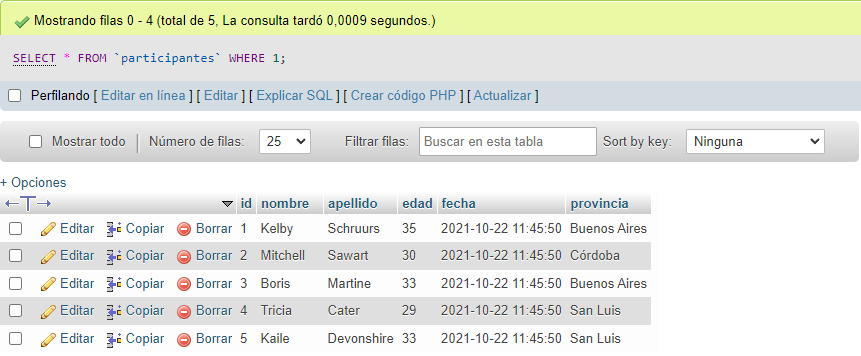

Estructura de la tabla Participantes
Datos de la tabla Participantes

-- phpMyAdmin SQL Dump
-- version 5.1.1
-- https://www.phpmyadmin.net/
--
-- Servidor: 127.0.0.1
-- Tiempo de generación: 22-10-2021 a las 16:48:36
-- Versión del servidor: 10.4.21-MariaDB
-- Versión de PHP: 8.0.11
SET SQL_MODE = "NO_AUTO_VALUE_ON_ZERO";
START TRANSACTION;
SET time_zone = "+00:00";
/*!40101 SET @OLD_CHARACTER_SET_CLIENT=@@CHARACTER_SET_CLIENT */;
/*!40101 SET @OLD_CHARACTER_SET_RESULTS=@@CHARACTER_SET_RESULTS */;
/*!40101 SET @OLD_COLLATION_CONNECTION=@@COLLATION_CONNECTION */;
/*!40101 SET NAMES utf8mb4 */;
--
-- Base de datos: `actividad11`
--
-- --------------------------------------------------------
--
-- Estructura de tabla para la tabla `participantes`
--
CREATE TABLE `participantes` (
`id` int(11) NOT NULL,
`nombre` varchar(40) CHARACTER SET latin1 NOT NULL,
`apellido` varchar(40) CHARACTER SET latin1 NOT NULL,
`edad` tinyint(2) NOT NULL,
`fecha` timestamp NOT NULL DEFAULT current_timestamp(),
`provincia` varchar(30) CHARACTER SET latin1 NOT NULL
) ENGINE=InnoDB DEFAULT CHARSET=utf8mb4;
--
-- Volcado de datos para la tabla `participantes`
--
INSERT INTO `participantes` (`id`, `nombre`, `apellido`, `edad`, `fecha`, `provincia`) VALUES
(1, 'Kelby', 'Schruurs', 35, '2021-10-22 14:45:50', 'Buenos Aires'),
(2, 'Mitchell', 'Sawart', 30, '2021-10-22 14:45:50', 'Córdoba'),
(3, 'Boris', 'Martine', 33, '2021-10-22 14:45:50', 'Buenos Aires'),
(4, 'Tricia', 'Cater', 29, '2021-10-22 14:45:50', 'San Luis'),
(5, 'Kaile', 'Devonshire', 33, '2021-10-22 14:45:50', 'San Luis');
--
-- Índices para tablas volcadas
--
--
-- Indices de la tabla `participantes`
--
ALTER TABLE `participantes`
ADD PRIMARY KEY (`id`);
--
-- AUTO_INCREMENT de las tablas volcadas
--
--
-- AUTO_INCREMENT de la tabla `participantes`
--
ALTER TABLE `participantes`
MODIFY `id` int(11) NOT NULL AUTO_INCREMENT, AUTO_INCREMENT=6;
COMMIT;
/*!40101 SET CHARACTER_SET_CLIENT=@OLD_CHARACTER_SET_CLIENT */;
/*!40101 SET CHARACTER_SET_RESULTS=@OLD_CHARACTER_SET_RESULTS */;
/*!40101 SET COLLATION_CONNECTION=@OLD_COLLATION_CONNECTION */;
Para imparar el archivo actividad11.sql se debe crear primero la Base de Datos
CREATE DATABASE `actividad11`;